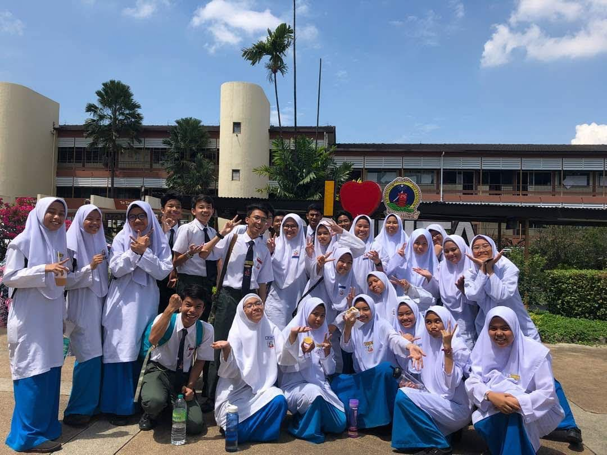
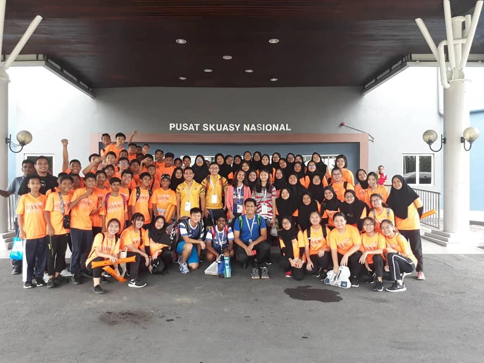
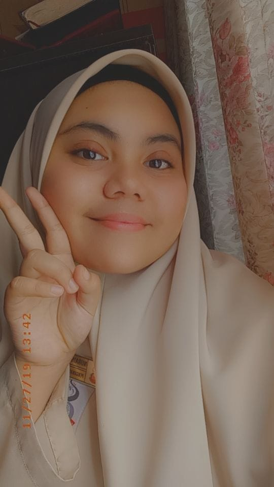
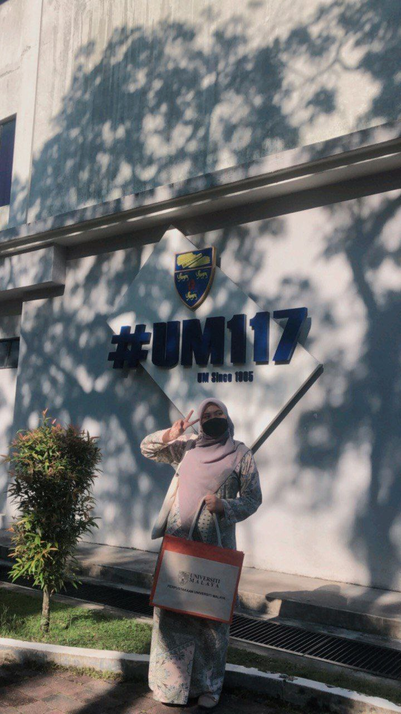

| Home | About Me | Family | Education | Experience | Friends | Gallery |
| Choral Speaking | Asian School Games 2018 |
|---|---|
In 2018, I competed in a district level choral speaking competition. This is because I want to improve my English speaking skills and get out of my comfort zone. |
In 2018, I spent a week at the Asian School Games with other female friends. There, I met many people from various countries, including Thailand, Singapore, and Indonesia, and they were all very nice and friendly. |
 |
 |
| Librarian Prefect | Intern |
|---|---|
| I was a librarian prefect for three years in high school, which sparked my interest in becoming a librarian. | I was doing my intern at University Malaya's Main Library for 6 weeks and I learnt so many things that related to the library things. |
 |
 |